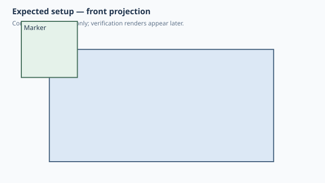

Forge qualification case
Explicit topology pick follows parent resize
1. Test setup

Test goal
Verify the AnchorTopology contract directly: Forge supplies fixed baseline edge/face/corner pick coordinates once, then native SolidCraft must retain that selected topology when the parent dimensions change.
Pass criteria
On the 40x20x20 board the marker is centered on the front-top-left corner selected by the explicit topology pick.
Mutation criterion
Change base_width/base_height from 40x20 to 80x40 mm in the saved .sc design; the unchanged native relationship must move the marker to the new front-top-left corner without rerunning Python.
2. Implementation under test
Fixture source
"""Qualification: a fixed AnchorTopology pick follows resized parent topology."""
class Board:
width = 40.0
height = 20.0
DEPTH = 20.0
def anchors(self):
# Deliberately fixed pick coordinates from the baseline 40x20x20 board.
# SolidCraft must retain the selected edge/face/corner after later
# parameter changes; Forge does not recompute these points.
return {
"front_top_left_pick": AnchorTopology(
edge=(-20.0, -10.0, 10.0),
on=(0.0, -10.0, 10.0),
corner=(-20.0, -10.0, 20.0),
z=(0.0, -1.0, 0.0),
x=(0.0, 0.0, -1.0),
)
}
def build(self):
return Box(self.width, self.DEPTH, self.height)
class Marker:
SIZE = 10.0
def build(self):
# Keep the marker on one side of its attachment origin. Native
# SolidCraft mating then places it fully outside the selected front
# face, touching the parent exactly at the topology corner.
return Box(self.SIZE, self.SIZE, self.SIZE).move(z=-self.SIZE / 2)
class AnchorTopologyMutation:
base_width = 40.0
base_height = 20.0
def build(self):
board = Board(
width=self.base_width,
height=self.base_height,
)
marker = Marker().attach(
board,
parent="front_top_left_pick",
child=AnchorFrame(),
)
return board + marker
AnchorTopologyMutation()
Public Forge API used
anchors() -> AnchorTopology(edge=..., on=..., corner=..., z=..., x=...); attach(parent='front_top_left_pick', child=AnchorFrame())
Forge model represented by this fixture
One parametric Board, one named topology anchor with deliberately fixed numeric pick points, and one centered Marker attached to that anchor.
3. Generated SolidCraft relationship
AnchorTopology is inlined into joint.create as edge/on/corner plus optional z/x. No persistent joint.origin and no Forge-side recomputation of the pick coordinates occurs after the saved design is mutated.
Show generated relationship / command details
[
{
"command": "joint.create",
"params": {
"type": "rigid",
"name": "Attach Marker:1 to Board:1",
"a": {
"occurrence": "Board:1",
"edge": [
-20.0,
-10.0,
10.0
],
"on": [
0.0,
-10.0,
10.0
],
"corner": [
-20.0,
-10.0,
20.0
],
"z": [
0.0,
-1.0,
0.0
],
"x": [
0.0,
0.0,
-1.0
]
},
"b": {
"occurrence": "Marker:1",
"point": [
-20.0,
-10.0,
20.0
],
"z": [
0.0,
0.0,
1.0
],
"x": [
1.0,
0.0,
0.0
]
},
"angle": 0.0
}
}
]3. Results
6. Evidence and references
Raw evidence
Show generated files and measurements
Reference models
These comparisons clarify concepts; Forge does not promise API compatibility with them.
- SolidCraft: This is a direct test of native topology persistence: the initial pick identifies topology, while later parameter changes move that topology.
- BOSL2: The higher-level intent is still a semantic attachment point, but this fixture specifically qualifies Forge's lower-level explicit topology reference.